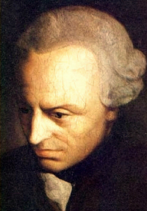

ドイツ観念論の哲学者。

カント。
画像はパブリックドメイン。
自分の書いたブログ「わたしの名はフレイ」2020/09/07より。
カントは、ドイツ観念論の哲学者。
想定的な批判哲学として、アンチノミー、すなわち二つの相互に矛盾する二律背反の命題から、本当にどのように考えれば「次元を超えた考え方」ができるのか、といった考え方が有名である。
カントは、先験的観念論という新しい考え方で、合理論と経験論のいいとこどりをして両者を統合する。
また、理性批判を行うことで、コペルニクス的転回（コペルニクスは地動説の提唱者）から、純粋理性では当たり前だと思っていたことも、本当は違うことが背景にあるのだ、ということを考える。
認識は経験のフィルターであり、色付き眼鏡であるとした上で、知性が先天的なのか後天的なのかという永遠の問いに「根源的獲得」という解を示し、先天的（ア・プリオリ）には前提があり、それは時間と空間であるとする。
また、有名なのが道徳律で、「自らの意志によって、普遍的とされうる、全員にとって正しいとなるかのような格率によって行動せよ」と言う。
他にも、悟性のカテゴリー、定言命法、仮象の世界などが有名だが、僕が好きなのは「経験を可能にする」と言う考え方で、これは経験と言うものを「可能性を形にする」と言う意味で考える、社会哲学である。
カントのアンチノミーは、相互に矛盾する定理を考える。それは、
１．宇宙は無限なのか有限なのか
２．ものは単純なのか単純ではないのか
３．法則は自由なのか運命なのか
４．神は居るのか居ないのか
と言うものだ。
カントは、理性批判をすることで、純粋理性では分からないことや当たり前だと思い込んでいることも、「コペルニクス的転回」から覆されると考える。
カントは、認識を経験的なフィルターによるものだと考える。「色つきメガネ」であると考えると分かりやすい。そこから、世界の様相としての「仮象の世界」を見出す。
カントは、経験と言うものを「可能性を形にする」と言う意味で、「経験を可能にする」と言うことを考える。これはある意味、心理学と社会学を貫く考え方である。
カントは、経験的に習得したものなのか、それとも先天的にあったものなのか、と言うア・プリオリを考える。また、空間や時間についてはその前提条件であると考える。
後日注記：カントは、人間の理性が先天的なのかそれとも後天的なのかという哲学上の永遠の問題に、「根源的獲得」と呼ばれる概念をもたらした。
カントの悟性のカテゴリーでは、可能性や決定などの論理を簡単な表の分類にして考えられるとする。
カントは、自由や道徳律、定言命法を使って道徳を考える。定言命法は、「条件付きで善をするのではなく、無条件で善をする場合が本当の善である」というもので、これに従って得られる道徳律とは、「普遍的だとなりうる法則によって行動せよ」というものである。
カント哲学と言えるかは分からないが、哲学的な「自由」とは、「自らによる」もの、あるいは「自らに由来する」ものであるとされることが多い。カントの入門書にも、「自由」という言葉が良く現れる。だが、カントの道徳論で必要なのは、「無条件に善をする」ということであり、それはとても厳格で、ある意味人生の中で誰もが出会う「最後の観念」である。
後日注記：カントの道徳律は、「自らの意志によって、（自分の中で）普遍的とされうる、全員にとって正しいとなるかのような格率（法則）によって行動せよ」というものである。
宗教については、「人間の道徳心の要請として、宗教が作り出された」と考える。
後日注記：カントは宗教を人間が作り出したものであると考える。「人間の道徳心の要請」が神すらも作り出したのである。
「カント入門（石川文康）」より引用。
“（われわれの）認識が対象に従うのでなく、むしろ対象の方がわれわれの認識に従わなければならない”－カント（『純粋理性批判』、第二版序論）
“汝の行為の根本指針が、汝の意志によって、あたかも普遍的自然法則となるかのように行為せよ”－カント（定言命法の第一方式）
「純粋理性批判」、「実践理性批判」、「判断力批判」、など。
純粋理性批判で知られる、ドイツ観念論の哲学者の一人です。科学的方法を研究しました。
Wikipedia
Wikisource
書籍